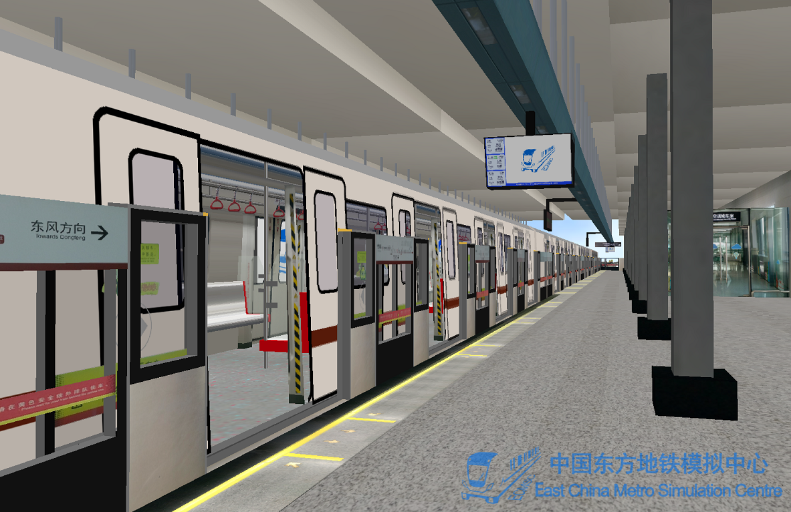
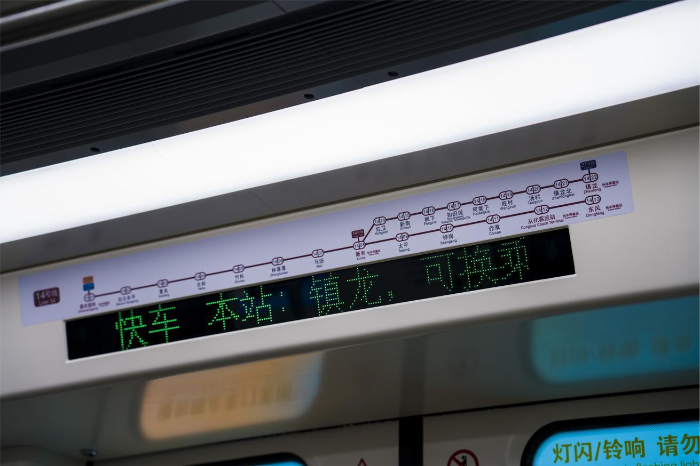
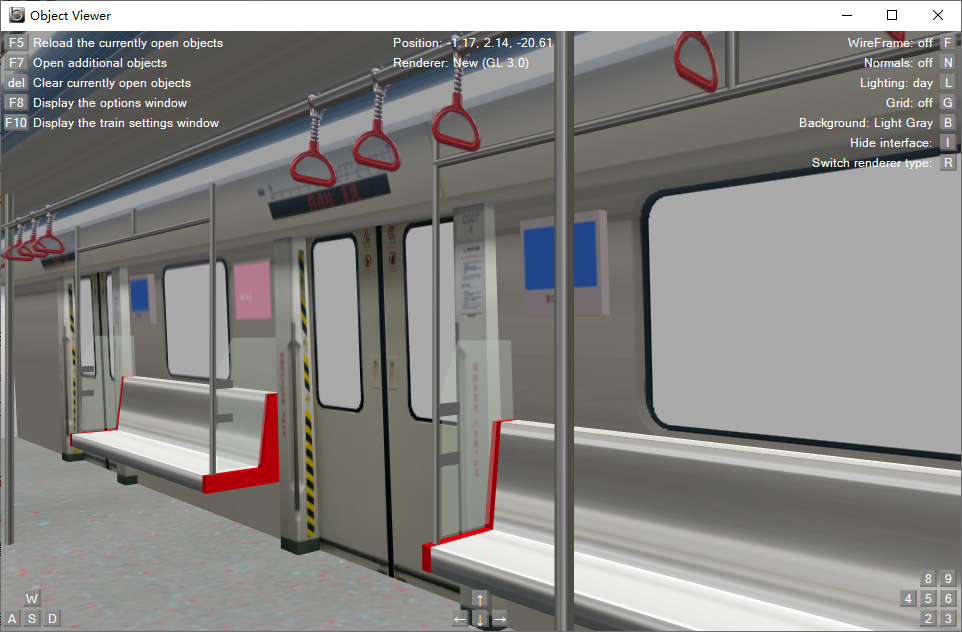

下载站
·
I
广州地铁14号线
I
1.关于档案
模拟线路：
广州地铁14号线
资源名称：
ECMSC
-
广州地铁14号线
上行模拟驾驶游戏
运行方向：上行（东风方向）
运行区间：嘉禾望岗-竹料（5站）
运用列车：广州地铁
B7型
电力动车组
版本：Ver.2.0（前称Ver.0.2）
版权所有：
中国东方地铁模拟中心
制作团队
特色：速度快、有高架段、列车加速度大
鸣谢：广东-Soledad1551（录音素材）、广东-地铁狂迷（资料提供）、广东-小黄铁粉（录音素材）、天津-zbx1425（下载站及档案文件混淆、反篡改插件技术提供）、广东-王生（支持）、广东-中国南方航空（录音素材）、广东-MCBSD室长（支持）

2.关于线路
广州地铁14号线
首次开通于2017年12月28日，是广州地铁2020年内
最快
的路线，属于市郊通勤铁路，呈西南-东北走向，连接广州白云区地嘉禾望岗枢纽和从化区中心。它也从新和站引出一条
前往知识城的支线
前往黄埔区的镇龙。14号线的主线设置了
大站快线
车次，嘉禾枢纽仅两站到达从化中心。
该线路匹配广州地铁
B7型
电力动车组，每列4动2拖，设计最高速度
130km/h
，线路中最高速度为125km/h。列车生产于中车株洲电力机车股份有限公司。车内的LED走字显示屏在普通车中显示
红色
，快车中显示
绿色
。（图源：维基百科）

3.下载协议
(请认真阅读)
本线路由
ECMSC
会长Tyex主导制作，制作团队共同合作，友好伙伴提供素材与支持，合法下载区域仅为
ECMSC官网下载站
与zbx1425友情提供的
Hmmsim线路库
安卓应用程序。本协议由Tyex编写于
2020年8月29日
。如果您下载了此资源，则表明您接受本协议
玩家未经允许
不得转载以及售卖档案
为尊重制作者，玩家
不得擅自修改资源内的文件，例如模型、贴图
玩家未经允许
不得借用模型或贴图
用于其他途径
我们欢迎玩家在社交平台晒游戏记录与宣传，但是
不得特意冒充制作者
，最好可以注明资源由ECMSC制作
如果发现有他人
违背此协议
，请向ECMSC进行告知
本协议必须对任何玩家普遍具有
约束力
以上内容最终解释权归ECMSC所有

4.准备下载 :-D
安卓(Android)版下载(Hmmsim2)
为了使您省去下载后移动文件的麻烦，ECMSC安卓版资源以zbx1425大佬制作的Hmmsim线路库应用程序为指定发布位置，请您点击下方链接前往Hmmsim线路库的安装页面
点击此处前往Hmmsim线路库下载页
电脑版下载(OpenBVE1.8以上版本)
您可点击下方链接直接下载资源，解压后便可使用1.8版本以上的OpenBVE程序畅玩
点击此处下载OpenBVE版资源
为防止侵权人士篡改文件后二次展示或发布，本资源内置了反篡改插件。
5.下载其他作品？
回到主页